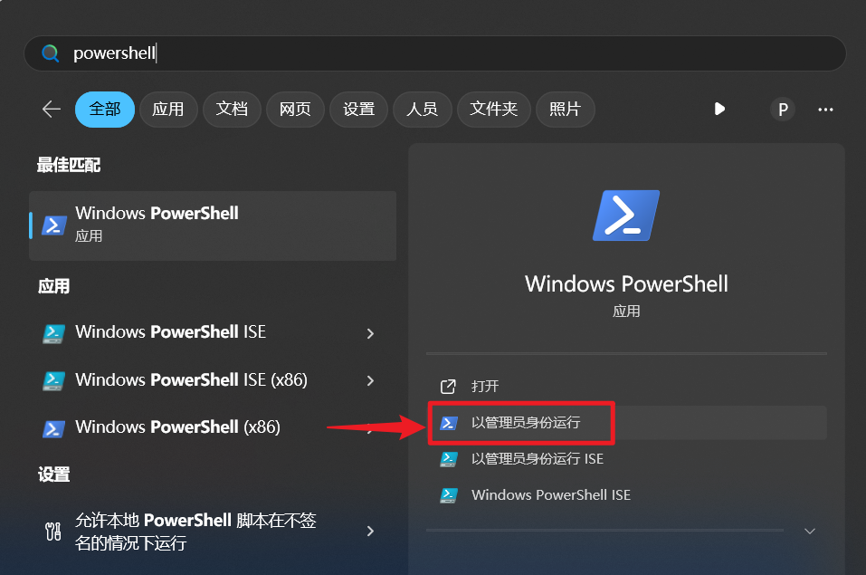
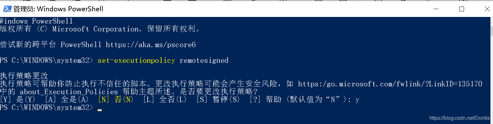

<!DOCTYPE lake>
<p data-lake-id="ud52956e1" id="ud52956e1"><code data-lake-id="u1288f8e9" id="u1288f8e9"><span data-lake-id="u60799dc9" id="u60799dc9">venv</span></code><span data-lake-id="u639cc89a" id="u639cc89a"> 是 Python 的一个内置模块，用于创建和管理虚拟环境（virtual environments）。虚拟环境可以独立于系统的全局环境，并且可以在其中安装特定版本的包和库，以便于项目之间的隔离和管理。下面是 </span><code data-lake-id="u2f0f6802" id="u2f0f6802"><span data-lake-id="ube15d350" id="ube15d350">venv</span></code><span data-lake-id="udea08285" id="udea08285"> 的使用教程：</span></p><p data-lake-id="ue28bc78d" id="ue28bc78d"><br/></p><h2 data-lake-id="VdvCe" data-lake-index-type="0" id="VdvCe"><span data-lake-id="u3a993a32" id="u3a993a32"> 创建虚拟环境</span></h2><p data-lake-id="udfa46916" id="udfa46916"><span data-lake-id="u6c2efa82" id="u6c2efa82">打开终端或命令提示符，并导航到你希望创建虚拟环境的目录。然后运行以下命令： </span></p><span class="yuque-card-unsupported">[codeblock]</span><p data-lake-id="uee9ad617" id="uee9ad617"><span data-lake-id="u20ad7dfa" id="u20ad7dfa"><br/></span><span data-lake-id="u7ca62c3b" id="u7ca62c3b">这将在当前目录下创建一个名为 </span><code data-lake-id="u32bf761b" id="u32bf761b"><span data-lake-id="ube24ba84" id="ube24ba84">myenv</span></code><span data-lake-id="u4e393018" id="u4e393018"> 的虚拟环境。你可以将 </span><code data-lake-id="ua078819c" id="ua078819c"><span data-lake-id="u673e0a25" id="u673e0a25">myenv</span></code><span data-lake-id="ud1cfa5a2" id="ud1cfa5a2"> 替换为你自己喜欢的任意名称。 </span></p><h2 data-lake-id="iGw1p" data-lake-index-type="0" id="iGw1p"><span data-lake-id="u2c33cdeb" id="u2c33cdeb"> 激活虚拟环境</span></h2><p data-lake-id="uacc423b3" id="uacc423b3"><span data-lake-id="u2d33698a" id="u2d33698a">在终端中，运行以下命令来激活虚拟环境： </span></p><ul list="u8142cd59"><li data-lake-id="u588456bc" fid="u4221101f" id="u588456bc"><span data-lake-id="u137a57d6" id="u137a57d6">在 Linux 或 macOS 上：</span></li></ul><span class="yuque-card-unsupported">[codeblock]</span><ul list="u5f830fc8"><li data-lake-id="udcf7bfd6" fid="uc7e6f9b1" id="udcf7bfd6"><span data-lake-id="u3454fd7e" id="u3454fd7e">在 Windows 上：</span></li></ul><span class="yuque-card-unsupported">[codeblock]</span><p data-lake-id="ue99acf50" id="ue99acf50"><span data-lake-id="u1b024112" id="u1b024112"> </span></p><p data-lake-id="u69212568" id="u69212568"><span data-lake-id="u3e583af7" id="u3e583af7">当虚拟环境激活后，你会注意到终端的提示符会变化，以反映当前已激活的虚拟环境。 </span></p><h2 data-lake-id="u2NtX" data-lake-index-type="0" id="u2NtX"><span data-lake-id="u6a0b78f8" id="u6a0b78f8"> 使用虚拟环境</span></h2><p data-lake-id="ud518b9d7" id="ud518b9d7"><span data-lake-id="ud31125a2" id="ud31125a2">在激活的虚拟环境中，你可以安装和使用特定版本的 Python 包和库，而不会影响全局环境。例如，你可以运行以下命令来安装包： </span></p><p data-lake-id="u91047f11" id="u91047f11"><span data-lake-id="udbcc1472" id="udbcc1472">​</span><br/></p><span class="yuque-card-unsupported">[codeblock]</span><p data-lake-id="u8e7e5442" id="u8e7e5442"><span data-lake-id="u3d66c315" id="u3d66c315"><br/></span><span data-lake-id="u60cfe9d2" id="u60cfe9d2">这将在虚拟环境中安装指定的包。你可以使用常规的 pip 命令来安装、升级或卸载其他包。 </span></p><h2 data-lake-id="Ltmoc" data-lake-index-type="0" id="Ltmoc"><span data-lake-id="uc1658cc8" id="uc1658cc8"> 退出虚拟环境:</span></h2><p data-lake-id="u82fe5221" id="u82fe5221"><span data-lake-id="u74f09c50" id="u74f09c50">当你完成使用虚拟环境后，可以通过运行以下命令来退出虚拟环境： </span></p><span class="yuque-card-unsupported">[codeblock]</span><p data-lake-id="ua44ace8f" id="ua44ace8f"><span data-lake-id="u80744ea8" id="u80744ea8">这将使虚拟环境停止激活，并返回到系统的全局环境。 </span></p><p data-lake-id="u8dd0a551" id="u8dd0a551"><span data-lake-id="uc8fdb373" id="uc8fdb373">虚拟环境的创建、激活和使用过程如上所述。通过使用 </span><code data-lake-id="uc75fb937" id="uc75fb937"><span data-lake-id="u91ebd709" id="u91ebd709">venv</span></code><span data-lake-id="udcd0800d" id="udcd0800d">，你可以在不同的项目之间轻松地切换和管理独立的环境。</span></p><p data-lake-id="u23fa3844" id="u23fa3844"><span data-lake-id="uabf78ad9" id="uabf78ad9">​</span><br/></p><h2 data-lake-id="qxgGu" data-lake-index-type="0" id="qxgGu"><span data-lake-id="u078b4f09" id="u078b4f09">VSCode配置虚拟环境自动激活</span></h2><p data-lake-id="u357d5b15" id="u357d5b15"><span data-lake-id="ue9885136" id="ue9885136">用超级管理员权限打开</span><code data-lake-id="uc437a72d" id="uc437a72d"><span data-lake-id="u41f37963" id="u41f37963">powershell</span></code></p><p data-lake-id="ued645504" id="ued645504"></p><p data-lake-id="u44c5ef5c" id="u44c5ef5c"><span class="lake-fontsize-12" data-lake-id="u72223725" id="u72223725" style="color: rgb(77, 77, 77)">输入</span><code data-lake-id="u234f2eb2" id="u234f2eb2"><span class="lake-fontsize-11" data-lake-id="u47ab8663" id="u47ab8663" style="color: rgb(199, 37, 78); background-color: rgb(249, 242, 244)">set-executionpolicy remotesigned</span></code><span class="lake-fontsize-12" data-lake-id="ua07badc4" id="ua07badc4" style="color: rgb(77, 77, 77)">，再输入</span><code data-lake-id="u43e55860" id="u43e55860"><span class="lake-fontsize-11" data-lake-id="u8c21348b" id="u8c21348b" style="color: rgb(199, 37, 78); background-color: rgb(249, 242, 244)">y</span></code><span class="lake-fontsize-12" data-lake-id="ud039ed74" id="ud039ed74" style="color: rgb(77, 77, 77)">确认</span><span data-lake-id="u67fe55d9" id="u67fe55d9"><br/></span></p>